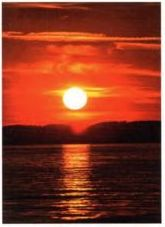

Часто ядовитые остатки после покрасочных работ, особенно антифулинг, остатки масла и другие отходы обслуживания не должны попадать ни в воду, ни в почву. Поэтому при необходимости рабочую зону следует тщательно закрывать. Образующиеся отходы необходимо утилизировать как опасные.
Загрязнения корпуса судна после плавания следует смывать пресной водой. Моющие средства использовать нельзя согласно немецкому законодательству об охране окружающей среды.
Для каждого водителя моторного судна само собой разумеется вести себя экологично и не беспокоить окружающих без необходимости. К этому относится, например, хорошая шумоизоляция двигателя и правильная регулировка карбюратора. Это также экономит бензин и увеличивает срок службы двигателя.

Представители водных видов спорта и защитники природы совместно разработали «10 золотых правил поведения водных спортсменов в природе». Они помогают сохранять условия жизни растений и животных и стали частью экзамена на получение удостоверения.
4. В «водно-болотных угодьях международного значения» проявляйте особую осторожность. Эти районы служат местом обитания редких животных и растений и поэтому особенно нуждаются в защите.